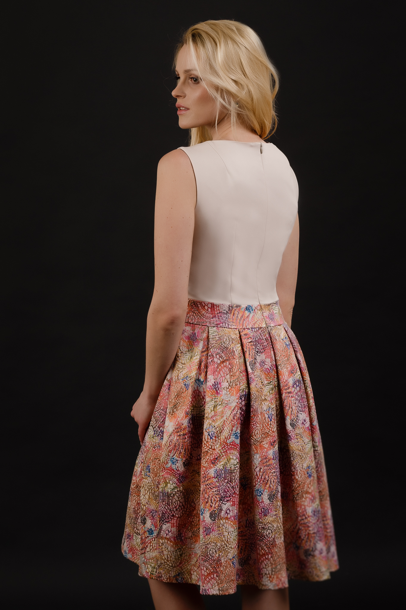

VAAUdress.eu | suknelė | didelių dydžių suknelės | VAAU
 Apie mus Taisyklės Prekių pristatymas Didmeninė prekyba Kontaktai 0 Prekių krepšelyje nėra KREPŠELIS Iš viso € 0.00 Paskutiniai vienetai Suknelės Tunikos Proginės suknelės Vasarinės suknelės Sarafanai Palaidinės Palaidinės ilgomis rankovėmis Golfai Vasarinės palaidinės Apatinis trikotažas Apatinukai Naktinukai Sijonai Paskutiniai vienetai Suknelės Tunikos Proginės suknelės Vasarinės suknelės Sarafanai Palaidinės Palaidinės ilgomis rankovėmis Golfai Vasarinės palaidinės Apatinis trikotažas Apatinukai Naktinukai Sijonai VAAUdress.eu | suknelė | didelių dydžių suknelės | VAAU 15756 page-template-default,page,page-id-15756,theme-starflix,bridge-core-1.0.6,woocommerce-no-js,ajax_fade,page_not_loaded,boxed,,qode-title-hidden,columns-3,qode-theme-ver-18.5,qode-theme-starflix,wpb-js-composer js-comp-ver-6.4.1,vc_responsive
Apie mus Taisyklės Prekių pristatymas Didmeninė prekyba Kontaktai 0 Prekių krepšelyje nėra KREPŠELIS Iš viso € 0.00 Paskutiniai vienetai Suknelės Tunikos Proginės suknelės Vasarinės suknelės Sarafanai Palaidinės Palaidinės ilgomis rankovėmis Golfai Vasarinės palaidinės Apatinis trikotažas Apatinukai Naktinukai Sijonai Paskutiniai vienetai Suknelės Tunikos Proginės suknelės Vasarinės suknelės Sarafanai Palaidinės Palaidinės ilgomis rankovėmis Golfai Vasarinės palaidinės Apatinis trikotažas Apatinukai Naktinukai Sijonai VAAUdress.eu | suknelė | didelių dydžių suknelės | VAAU 15756 page-template-default,page,page-id-15756,theme-starflix,bridge-core-1.0.6,woocommerce-no-js,ajax_fade,page_not_loaded,boxed,,qode-title-hidden,columns-3,qode-theme-ver-18.5,qode-theme-starflix,wpb-js-composer js-comp-ver-6.4.1,vc_responsive
Suknelės
Moteriška suknelė tai vientisas rūbas neturintis perskyrimo ties liemeniu, kitaip sakant tai viršutinės ir apatinės kūno dalies rūbas sujungtas ties liemeniu, paprastai neturintis klešnių.
Suknelės būna labai įvairios: vestuvinės, proginės suknelės, vasarinės suknelės , tačiau pačios populiariausios tiek pasirinkimo tiek dėvėjimo prasme yra klasikinės moteriškos suknelės . Šios suknelės puikiai tinka kasdienai, į darbą ar net nedidelį vakarėlį.
Keičiantis žmonių gyvenimo tempui keitėsi ir rūbų audiniai, todėl nekeista, jog suknelės šiuo metu gaminamos daugiausia iš trikotažinių audinių. Trikotažosuknelės turi dvi geriausias savo savybes: pirmoji yra tai jog jos elastingos ir nevaržo judesių, antroji jos beveik nesiglamžo ir yra lengvai prižiūrimos.
www.vaaudress.eu Jūs rasite VAAU vidutinių ir didelių dydžių sukneles . Siūlome Jums nuo 38 (44) iki 52 (58) dydžio klasikinio stiliaus sukneles. Visos siūlomos suknelės pagamintos Lietuvoje . Garantuojame nepriekaištingą pagaminimo kokybę. Suknelė – pagrindinis rūbas moters drabužinėje, tad jų niekada nebus per daug.
VAAUdress.eu kviečia sutaupyti laiko vaikštant po parduotuves ir didelių dydžių sukneles internetu įsigyti jau dabar !
Pasirinkti savybesGarstyčių spalvos suknelė su kišenėmis
€ 40.99 Pasirinkti savybesGėlėta suknelė dekoruota krūtinės sritimi
€ 33.99 Pasirinkti savybesGode stiliaus ilga suknelė
€ 56.99 Pasirinkti savybesJuoda proginė suknelė linijomis
€ 45.99 Pasirinkti savybesJuoda suknelė trikampiu kaklu
€ 34.99 Pasirinkti savybesJuoda varpelio silueto suknelė
€ 40.99 Pasirinkti savybesKreminė siaurėjanti suknelė
€ 38.99 Pasirinkti savybesKreminės spalvos varpelio silueto suknelė
€ 39.99 Pasirinkti savybesMėlyna suknelė aukštu kaklu
€ 40.99 Pasirinkti savybesMėlyna suknelė dekoruota rože
€ 39.50 Pasirinkti savybesMėlyna suknelė su rože
€ 37.99 Pasirinkti savybesPilka šventinė suknelė su aksominiu raštu
€ 45.00 Pasirinkti savybesPilka varpelio formos suknelė
€ 39.99 Pasirinkti savybesRaudona proginė suknelė linijomis
€ 45.99 Pasirinkti savybesRudų raštų sunelė “ Elegancija“
€ 45.00 Out of stockRusvos spalvos varpelio silueto suknelė
€ 39.99 Pasirinkti savybesSpausto rašto juoda suknelė
€ 40.99 Pasirinkti savybesSpausto rašto raudona suknelė
€ 40.99 Pasirinkti savybesSpausto rašto tamsiai mėlyna suknelė moterims
€ 40.99 Pasirinkti savybesSuknelė aukšta apykakle
€ 39.99 Pasirinkti savybesSuknelė su rože
€ 37.99 Pasirinkti savybesSuknelė su mėlyna rože
€ 33.05 Pasirinkti savybesSuknelė su raudona rože
€ 33.05 Pasirinkti savybesŠviesiai violetinė suknelė
€ 39.50 Pasirinkti savybesVioletinė suknelė su rože
€ 37.99 Pasirinkti savybesŽalia aksomo suknelė
€ 39.99 Pasirinkti savybesŽalia proginė suknelė aksominiu raštuku
€ 45.00 Pasirinkti savybesŽalia suknelė su rože
€ 37.99 Pasirinkti savybesŽalia suknelė su vilna
€ 42.99 Pasirinkti savybesŽalių raštų suknelė „Elegancija“
€ 45.00 Pasirinkti savybesŽydra suknelė su rože
€ 37.99 Pasirinkti savybesŽydra suknelė su vilna
€ 42.99Pagaminta Lietuvoje
Copyright 2018 © VAAU | Sukurta starflix
